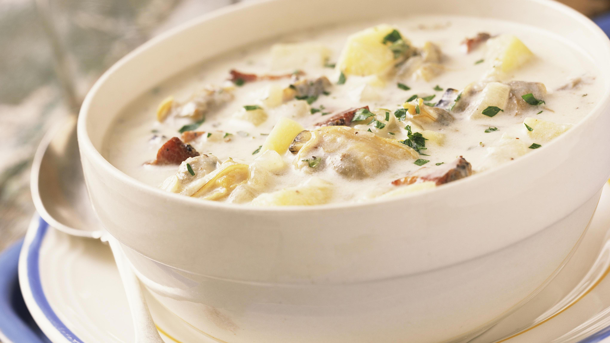

Clam Chowder

Description
Soup season has come and gone, but a bowl of clam chowder can really be eaten in any kind of
weather, especially when it comes to the homemade version.
If you didn't know, clam chowder is actually a very simple soup to prepare with few pantry ingredients.
Now some recipes call for fresh clams but I actually prefer to use canned clams.
Ingredients
- 4 slices bacon, diced
- 2 table spoons unsalted butter
- 2 cloves garlic, minced
- 1 onion, diced
- 1/2 teaspoon dried thyme
- 3 tablespoons all-purpose flour
- 1 cup milk
- 1 cup vegetable stock
- 2 (6.5-ounce) cans chopped clams, juices reserved
- 1 bay leaf
- 2 russet potatoes, peeled and diced
- 1 cup half and half
- Kosher salt and freshly ground black pepper, to taste
- 2 tablespoons chopped fresh parsley leaves
Directions
-
Heat a large stockpot or Dutch oven over medium high heat. Add bacon and cook until brown and crispy,
about 6-8 minutes. Transfer to a paper towel-lined plate, reserving 1 tablespoon excess fat in the stockpot.
-
Melt butter in the stockpot. Add garlic and onion, and cook, stirring frequently, until onions have become translucent,
about 2-3 minutes. Stir in thyme until fragrant, about 1 minute.
-
Whisk in flour until lightly browned, about 1 minute. Gradually whisk in milk, vegetable stock, clam juice and bay leaf,
and cook, whisking constantly, until slightly thickened, about 1-2 minutes. Stir in potatoes.
-
Bring to a boil; reduce heat and simmer until potatoes are tender, about 12-15 minutes.*
-
Stir in half and half and clams until heated through, about 1-2 minutes; season with salt and peper,
to taste. If the soup is too thick, add more half and half as needed until desired consistency is reached.
-
Serve immediately, garnished with bacon and parsley, if desired.